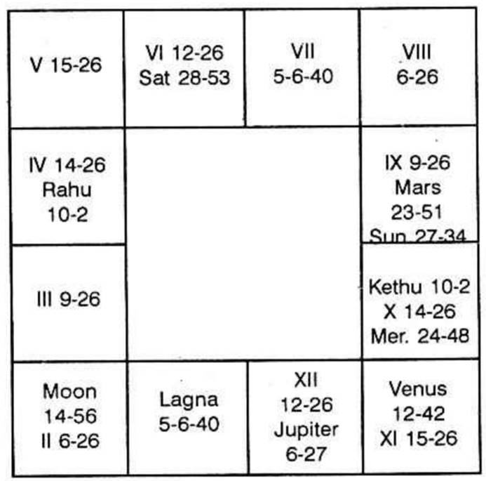

Number given: 150
Place of judgment: 28°38′ N.
Time: 7-30 A.M.
Date: 14.08.1970

Second house indicates receipt of money; it may be by any means: by drawing salary, by borrowing, by selling anything, etc.
Sixth house denotes getting money by loan or loan repaid by one who borrowed or by receiving one’s dues due to service rendered to another.
Tenth house brings money by profession. Eleventh is the net profit - the gains.
Second house is occupied by Moon; Venus is in the constellation of the occupant of the second house.
Sixth house is occupied by Saturn. No planet is in its star.
Tenth house is occupied by Mercury and Venus; Mars and Sun are in Mercury star; Mercury and Moon are in Venus star. Jupiter is owner of second house.
Hence Venus, Moon, Saturn, Mercury, Mars, Sun and Jupiter are the Significators. Rahu acts as an agent of Saturn; Sun is represented by Ketu.
Venus is in the sub of Rahu; Moon in the sub of Venus; Saturn in the Sub of Mars; Mercury in its own sub; Mars in its own sub; Sun in the sub of Jupiter, Jupiter in the sub of Moon.
Venus, Mercury, Sun, Jupiter and Moon are the most fruitful one.
RULING PLANETS (ON 14.08.70)
Friday governed by: Venus
Moon’s star lord: Venus
Rasi lord: Jupiter
Lagna lord: Sun
Lagna constellation lord: Venus
Hence consider Venus, Jupiter and Sun.
None is retrograde. None in the constellation of retrograde planet.
There are three sensitive points governed by the above:
(a) Sun sign Venus star Jupiter sub 21° Leo.
(b) Venus sign Jupiter star Sun sub 29° Libra.
(c) Jupiter sign Venus star Sun sub 16° Sagittarius.
Hence when the strongest fruitful Significator of the luminaries pass any or many of sensitive points, the matter fructifies. Further, Sun, lord of Lagna at the time of query, is lord of 10. It is in the sub of Jupiter, lord of 2 in 11. Hence, take the transit of Sun.
It is in the movable and fruitful sign. So, it will yield the result quickly. Hence out of the 3 sensitive points, it will pass through the first sensitive point on Monday 7th September, 1970. Sun will be in his own sign in Venus star Jupiter sub. Moon will be in Jupiter star.
Therefore on 7-9-1970 he will receive his first salary.
[It is not uncommon that some are appointed or transferred and they are not sure of the date on which they will receive their salary.]